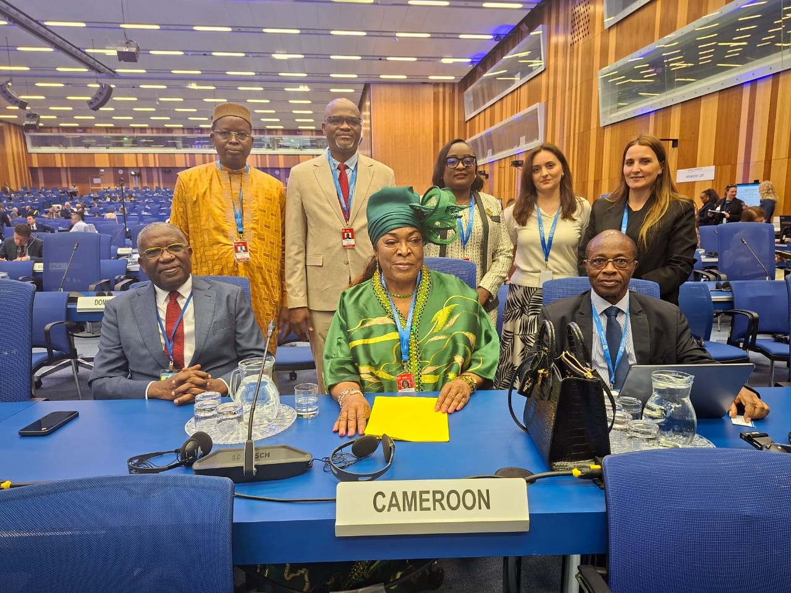
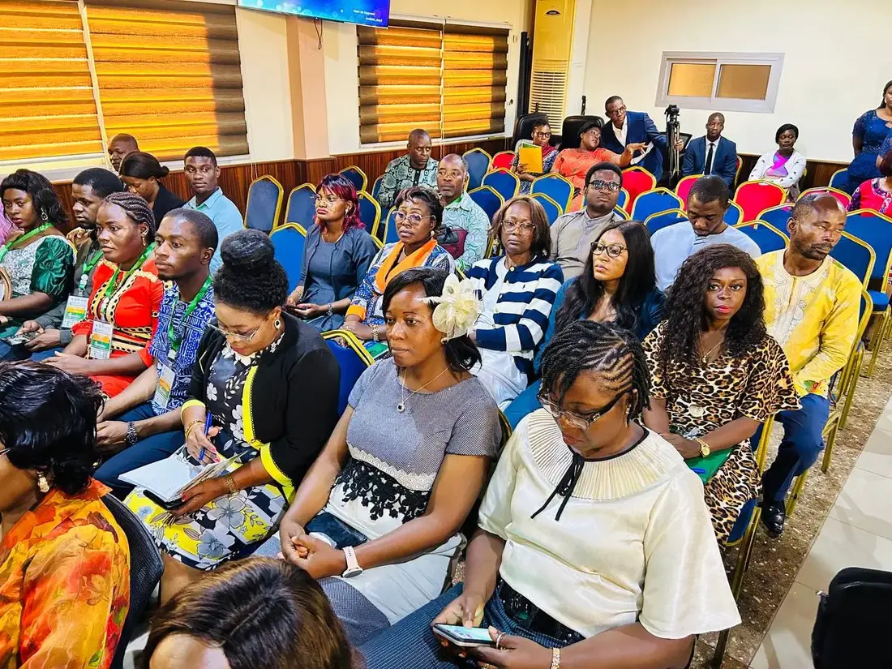
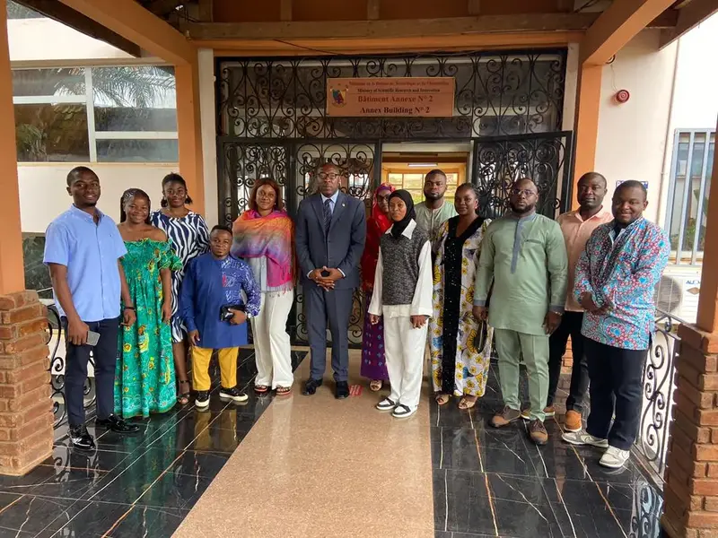
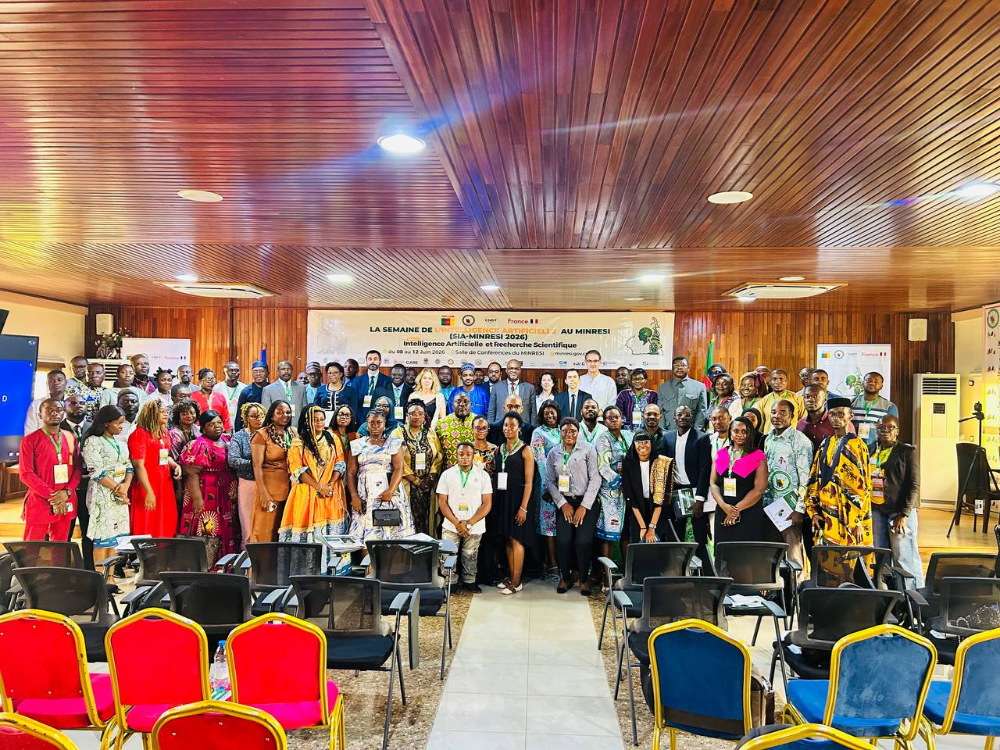
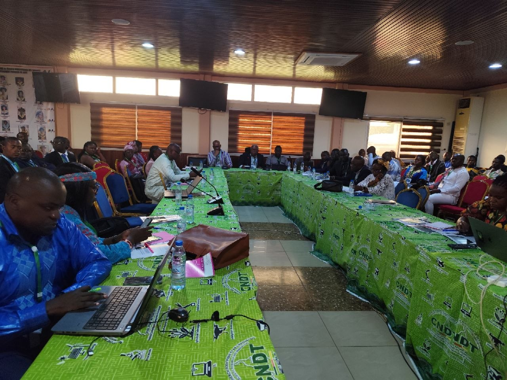
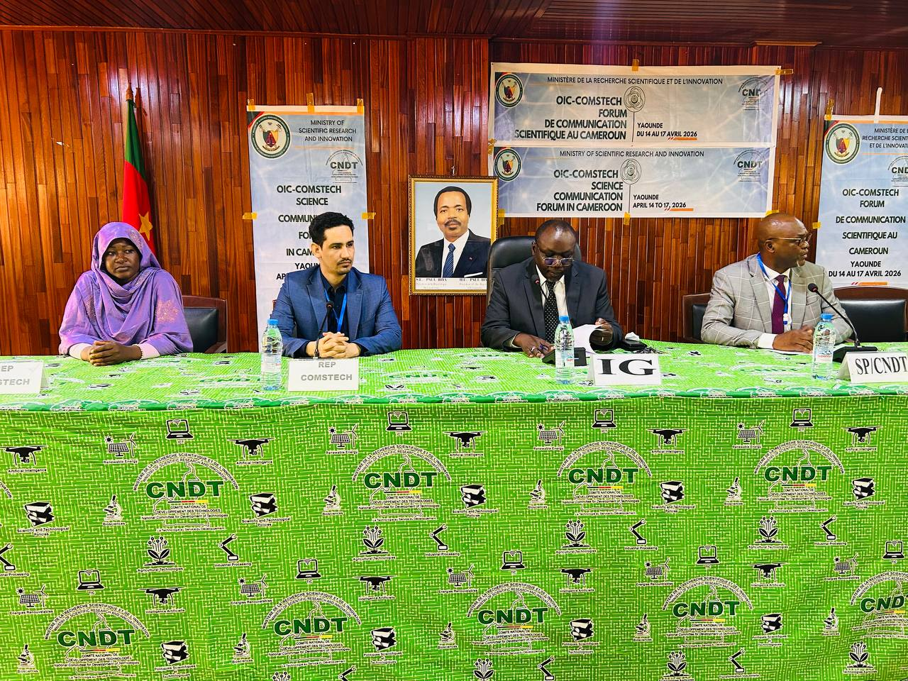
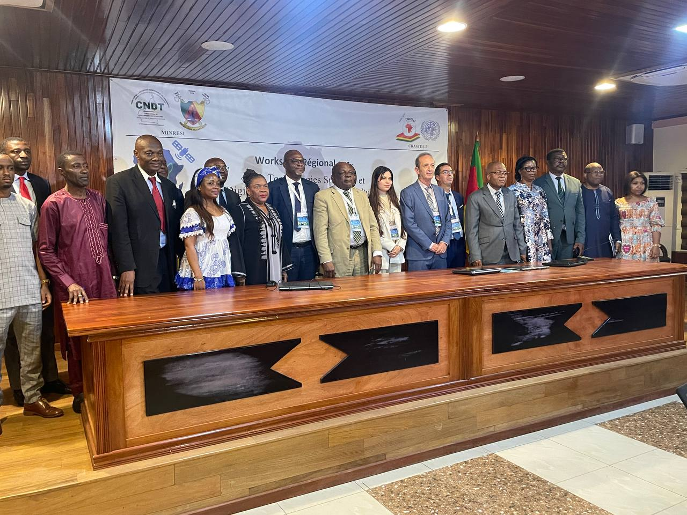
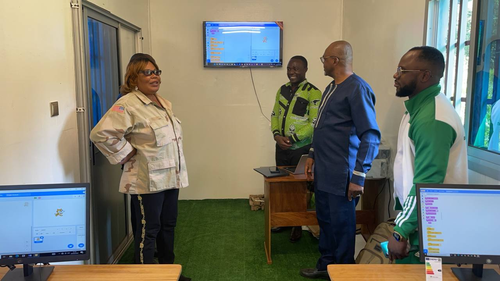

Information institutionnelle
Actualités
Retrouvez les activités scientifiques, rencontres, projets et publications du CNDT.

Intelligence artificielle et souveraineté numérique : chercheurs et experts en dialogue
Une réflexion scientifique consacrée aux infrastructures, aux données et aux compétences adaptées au contexte camerounais.
Lire l’actualité
Le CNDT au cœur de la Semaine de l’Intelligence Artificielle 2026
Lire l’actualité
Symposium du CNDT sur l'IA
Lire l’actualité
Atelier COMSTECH
Lire l’actualité
Atelier de formation CRASTE-LF
Lire l’actualité
Atelier Initiation des Jeunes de Bayangam à l’IA
Lire l’actualitéInstituts et Partenaires